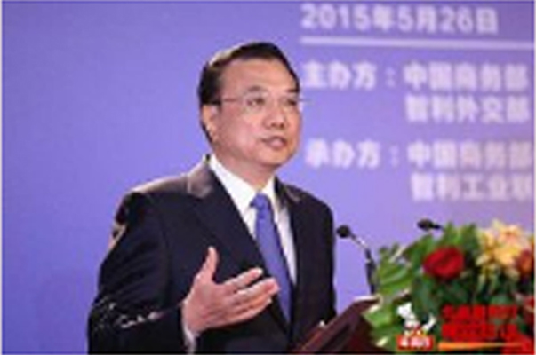
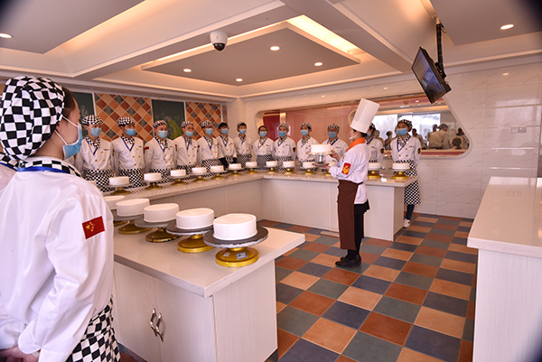

新华社北京3月5日电 国务院总理李克强5日在作政府工作报告时说，推进以保障和改善民生为重点的社会建设。民生是为政之要，必须时刻放在心头、扛在肩上。在当前国内外形势严峻复杂的情况下，更要优先保障和改善民生，该办能办的实事要竭力办好，基本民生的底线要坚决兜牢。
大力促进就业创业。完善就业政策，加大就业培训力度，加强对灵活就业、新就业形态的支持。今年高校毕业生795万人， 再创历史新高， 要实施好就业促进、 创业引领、基层成长等计划，促进多渠道就业创业。切实做好退役军人安置工作。加大就业援助力度，扶持城镇困难人员、残疾人就业，确保零就业家庭至少有一人稳定就业。我们必须牢牢抓住就业这一民生之本，让人们在劳动中创造财富，在奋斗中实现人生价值。
办好公平优质教育。统一城乡义务教育学生“两免一补”政策，加快实现城镇义务教育公共服务常住人口全覆盖，持续改善薄弱学校办学条件，扩大优质教育资源覆盖面，不断缩小城乡、区域、校际办学差距。继续扩大重点高校面向贫困地区农村招生规模。提高博士研究生国家助学金补助标准。推进世界一流大学和一流学科建设。深化高考综合改革试点。加快发展现代职业教育。加强民族教育，办好特殊教育、继续教育、学前教育和老年教育。加强教师队伍建设。制定实施《中国教育现代化2030》。我们要发展人民满意的教育，以教育现代化支撑国家现代化， 使更多孩子成就梦想、更多家庭实现希望。
推进健康中国建设。城乡居民医保财政补助由每人每年420元提高到450元，同步提高个人缴费标准，扩大用药保障范围。在全国推进医保信息联网，实现异地就医住院费用直接结算。完善大病保险制度，提高保障水平。全面启动多种形式的医疗联合体建设试点，三级公立医院要全部参与并发挥引领作用，建立促进优质医疗资源上下贯通的考核和激励机制，增强基层服务能力，方便群众就近就医。分级诊疗试点和家庭签约服务扩大到85%以上地市。 继续提高基本公共卫生服务经费补助标准。及时公开透明有效应对公共卫生事件。保护和调动医务人员积极性。构建和谐医患关系。适应实施全面两孩政策，加强生育医疗保健服务。支持中医药、民族医药事业发展。食品药品安全事关人民健康，必须管得严而又严。要完善监管体制机制，充实基层监管力量，夯实各方责任，坚持源头控制、产管并重、重典治乱，坚决把好人民群众饮食用药安全的每一道关口。
织密扎牢民生保障网。继续提高退休人员基本养老金，确保按时足额发放。稳步提高优抚、社会救助标准，实施好临时救助制度。调整完善自然灾害生活补助机制，全部完成去年洪涝灾害中倒损民房的恢复重建。加强农村留守儿童关爱保护和城乡困境儿童保障。关心帮助孤寡老人。全面落实残疾人“两项补贴”制度。县级政府要建立基本生活保障协调机制，切实做好托底工作，使困难群众心里有温暖、生活有奔头。锲而不舍解决好农民工工资拖欠问题，决不允许他们的辛勤付出得不到应有回报。
发展文化事业和文化产业。加强社会主义精神文明建设，坚持用中国梦和社会主义核心价值观凝聚共识、汇聚力量。繁荣哲学社会科学和文学艺术创作，发展新闻出版、广播影视、档案等事业。建设中国特色新型智库。加强文物和非物质文化遗产保护利用。大力推动全民阅读，加强科学普及。提高基本公共文化服务均等化水平。加快培育文化产业，加强文化市场监管。推动中国文化走出去。做好冬奥会、冬残奥会筹办工作，统筹群众体育、竞技体育、体育产业发展，广泛开展全民健身，使更多人享受运动快乐、拥有健康体魄。人民身心健康、乐观向上，国家必将充满生机活力。
推动社会治理创新。健全基层群众自治制度，加强城乡社区治理。充分发挥工会、共青团、妇联等群团组织作用。改革完善社会组织管理制度，依法推进公益和慈善事业健康发展，促进专业社会工作、志愿服务发展。切实保障妇女、儿童、老人合法权益。加快社会信用体系建设。加强法治宣传教育和法律服务。落实信访工作责任制，依法及时就地解决群众合理诉求。深化平安中国建设，健全立体化信息化社会治安防控体系，严厉打击暴力恐怖活动，依法惩治黑恶势力犯罪和盗窃、抢劫、电信网络诈骗等多发性犯罪，维护国家安全和社会稳定。严格规范公正文明执法，大力整治社会治安突出问题，全方位提高人民群众安全感。
人命关天，安全至上。必须持之以恒抓好安全生产。加强安全基础设施建设，做好地震、气象、测绘、地质等工作。严格安全生产责任制，全面落实企业主体责任、地方属地管理责任、部门监管责任，坚决遏制重特大事故发生，切实保障人民群众生命财产安全。
北京中道餐饮培训学校

北京培训学校：北京市丰台去大溪地一区37号 郑州培训地址：郑州市中原区碧沙岗中原商贸城
郑州24小时咨询热线：15637153302
北京24小时咨询热线：15637153302